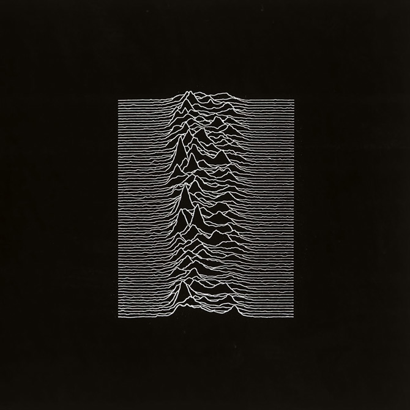
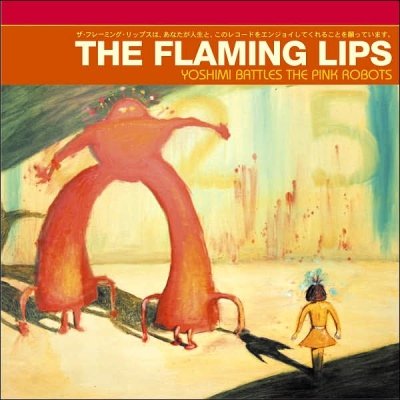

The Clash

London Calling is the third studio album by English punk rock band The Clash. It was released in the United Kingdom on 14 December 1979 by CBS Records, and in the United States in January 1980 by Epic Records.[1] London Calling is a post-punk album that incorporates a range of styles, including punk, reggae, rockabilly, ska, New Orleans R&B, pop, lounge jazz, and hard rock. The album's subject matter included social displacement, unemployment, racial conflict, drug use, and the responsibilities of adulthood Link to their Wiki.
Joy Division
Unknown Pleasures is the debut studio album by the English post-punk band Joy Division. It was recorded at Strawberry Studios in Stockport in April 1979, with Martin Hannett as producer, and was released on 15 June 1979 by Factory Records. It followed an abandoned album for RCA Records. No singles were released from Unknown Pleasures, though the release of "Transmission" boosted its sales, despite the album failing to chart at the time. Link to their Wiki.
Flaming Lips
Yoshimi Battles the Pink Robots is the tenth studio album by The Flaming Lips, released by Warner Bros. Records on July 16, 2002, in the United Kingdom and the following day in the United States. It is characterized by electronic-influenced, psychedelic-tinged indie rock compositions. It has been certified Gold by the RIAA.[1] Yoshimi was well-received critically and commercially, helping the band break into the mainstream. The album was adapted into a musical in 2012. Link to their Wiki.